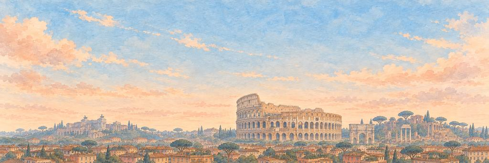

Roma game pesawat kertas
Melihat Kolosseum, tempat kerumunan bersorak dua ribu tahun lalu.
Hidung ke atas di atas bukit. Lewati singa Capitoline, lalu gladiator.
Tujuh bukit
Konon Romulus mendirikan Roma di Bukit Palatine pada 753 SM. Dari sekumpulan desa di puncak bukit, kota ini tumbuh menjadi ibu kota kekaisaran yang mengelilingi Laut Tengah, dan pada abad ke-2 M lebih dari satu juta orang tinggal di sana.
“Aku akan menghitung tujuh bukitnya dari udara.”
Landmark-nyaKolosseum
Kolosseum dibuka pada 80 M dengan 100 hari pertandingan dan menampung sedikitnya 50.000 orang. Pada hari panas, para pelaut dari armada angkatan laut di Misenum mengoperasikan tenda kanvas raksasa, velarium, yang dipasang dari tiang-tiang di sekeliling bagian atas untuk meneduhi penonton.
Kawasan
Pusat bersejarah Roma terbagi menjadi 22 distrik lama yang disebut rioni. Trastevere, nomor 13, terletak di tepi barat sungai. Namanya berasal dari bahasa Latin untuk "di seberang Tiber". Di selatan pusat kota berdiri sebuah bukit buatan manusia. Monte Testaccio tingginya sekitar 35 meter dan tersusun dari pecahan hingga 53 juta guci minyak zaitun Romawi.
Sungai
Sungai Tiber mengalir sekitar 406 km dari Pegunungan Apennine ke Laut Tirenia, sungai terpanjang ketiga di Italia. Di dalam kota terdapat Pulau Tiber, satu-satunya pulau di sungai ini di Roma, yang berbentuk seperti perahu. Ponte Fabricio, yang dibangun pada 62 SM, menghubungkannya dengan tepi sungai dan sebagian besar masih jembatan Romawi aslinya. Setelah banjir besar pada Desember 1870, kota ini membangun tembok batu tinggi di sepanjang tepian sungai, yang selesai pada 1926.
Cakrawala kota
Kubah dan menara lonceng menjulang di atas atap-atap. Yang tertinggi adalah kubah Basilika Santo Petrus, rancangan Michelangelo, yang selesai pada 1590, setelah ia wafat. Tingginya 136,57 meter dari lantai sampai puncak salibnya. Monumen Vittorio Emanuele II, yang selesai pada 1935, dibangun dari marmer putih terang, dan warga Roma menyebutnya "kue pengantin".
Waktu terbaik untuk melihatnya
Naiklah ke bukit Janiculum sebelum tengah hari. Setiap hari pukul 12 siang, sebuah meriam menembakkan peluru kosong di sana, kebiasaan yang dimulai pada 1847 agar lonceng-lonceng gereja bisa berbunyi pada saat yang sama. Saat matahari terbenam, teras Pincio di atas Piazza del Popolo menghadap ke seberang atap-atap sampai ke Basilika Santo Petrus. Di musim dingin, kawanan besar burung jalak berputar-putar di atas Sungai Tiber saat senja.
Siapa yang menjaga keinginan di Roma.
Penjaga Elite bangun lebih dulu; Penjaga Boss menjaga keinginan itu sendiri. Kenai titik lemah mereka untuk BONK!, berikan pukulan terakhir untuk KO!, lalu masing-masing tersenyum dan membungkuk.
-
Elite


Singa Capitoline
Menyemburkan air di tangga · Penjaga Bukit Capitoline
Dua singa dari basal Mesir hitam menjaga kaki tanjakan besar karya Michelangelo ke Bukit Capitoline, bukit di jantung Roma kuno. Keduanya dipahat di Mesir jauh sebelum Roma menguasainya, dibawa ke kota pada zaman kuno, dan dipasang di tangga pada 1500-an, tempat mereka masih menyemburkan air dari mulutnya.
Singa batu hitam itu mengangkat kepala bermahkotanya dan merapikan jubahnya. Sang singa mengibaskan surainya dan tetap di tangga. Sang singa menunduk dengan kepala bermahkotanya dan menyingkir.
“Aku mau bertanya seperti apa bukitnya sebelum ada tangga.”
-
Boss

Gladiator Merdeka
Pria yang memenangkan pedang kayu · Penjaga Kolosseum
Di arena Roma, gladiator yang bertarung cukup baik bisa memenangkan kebebasannya. Sebagai buktinya ia diberi rudis, pedang kayu polos. Sebagian orang merdeka itu, para rudiarii, memilih kembali ke arena sebagai pelatih dan juara, dan penonton menyorakkan nama mereka.
Gemuruh penonton kembali padanya. Ia mengangkat pedang kayu. Ia terhuyung, mengangkat perisai, dan kembali mantap. Ia menurunkan pedang kayu dan menunduk. Ia sudah merdeka.
“Aku mau bertanya seperti apa pagi pertama yang bebas.”
Roma tamat. Aku menghitung ketujuh bukitnya.
- Sang singa tak pernah meninggalkan tangga. Kurasa ia suka di situ.
- Sang gladiator membungkuk dengan pedang kayu. Tampaknya lebih berat daripada sebenarnya.
Pesawat tiba di Roma dari Kairo. Selesaikan kota ini dan peta membuka jalan ke Istanbul dan Barcelona. Tampilan pesawat khasnya adalah jejak Kelopak Mawar.